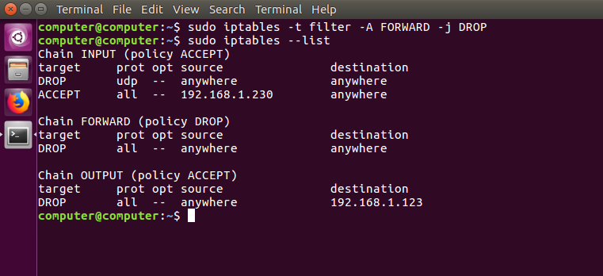
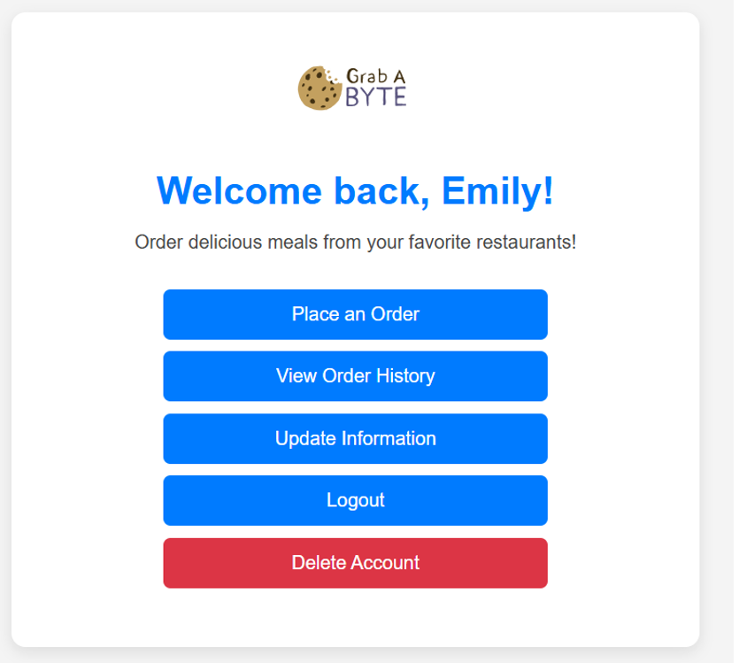

Course Projects
News Aggregation & AI Summarization Web App (Group Project)
- What it is: Pulls news from multiple APIs, groups similar stories, and generates summaries.
- Tools: React, Node/Express, AWS (EC2 + S3), GitHub, API integrations.
- My role: Worked on backend/API integration and deployment workflow (EC2/S3), plus troubleshooting and documentation.
- Link: GitHub Repo

Firewall Design using IPTables
- What it is: Designing a fully working firewall with traffic analysis, rule-based detection, and attack/defense concepts.
- Tools: Wireshark, Linux, scripting, basic packet-level troubleshooting.
- My role: Ran experiments, captured evidence/screenshots, and implement IPTable rules.

Database Food Ordering App (MySQL)
- What it is: A food ordering system that uses an SQL database for its menu. It lets a user place an order and calculates their total.
- Tools: MySQL, MySQL Workbench, ERD modeling.
- My role: Implemented queries, validated results, and normalized the database.
